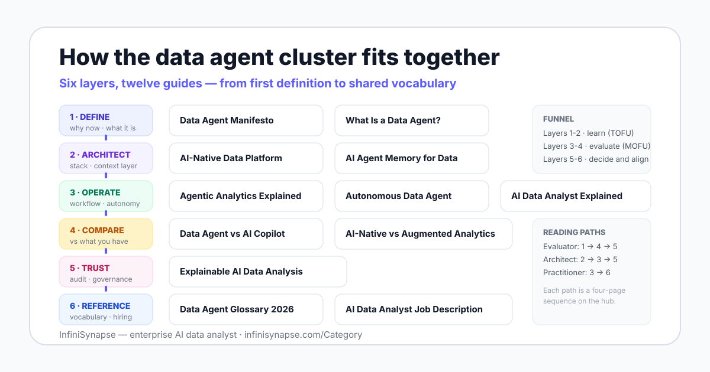

Data Agent Category Hub for AI-Native Analytics Teams
Twelve guides on the data agent category — definitions, architecture, autonomy, comparisons, and trust — organized into reading paths so you arrive at a tool evaluation with criteria instead of vendor slogans.
AuthorInfiniSynapse Research, product and data architecture team
Published2026-06-11 · Last verified 2026-06-12 · Next review 2026-09-12
PurposeOrganize the full data agent topic cluster into persona-based reading paths for buyers, architects, and practitioners.
Disclosure: This hub is published by InfiniSynapse, which builds an enterprise AI data analyst and sells in this category. Every linked guide uses InfiniSynapse as a worked example where relevant, and every guide also names the cases where a simpler BI, spreadsheet, or copilot workflow is the better choice.
TL;DR
Evaluating tools? Read the four-page buyer path: definition → agent vs copilot → AI-native vs augmented → explainability. You will leave with a checklist, not a shortlist of logos.
Designing the stack? The architect path covers the AI-native platform blueprint, the memory layer, scoped autonomy, and the agentic workflow that ties them together.
Doing the work? The practitioner path explains what an AI data analyst actually does, how the human role changes, and which terms your whole team should agree on first.
Direct answer: what this hub covers
This hub collects 12 guides that explain the data agent category: what data agents are, how AI-native platforms and memory layers work, how agents differ from copilots and augmented analytics, and how to demand explainable, auditable analysis. Use the three reading paths to go from first definition to a defensible tool evaluation.

Start here: three reading paths
Reading order matters in this category, because vendors use the same words for different systems. Each path below is four pages, sequenced so every page sets up the next decision.
Path 1: Evaluator or buyer — from definition to shortlist criteria
What Is a Data Agent? — fixes the definition and the five-stage loop, so demos cannot rename a chat assistant into an agent.
Data Agent vs AI Copilot — places the category against the tools you already pay for, with a choose-by-question-shape decision rule.
Architecture guide: a data system designed around the agent loop — context retrieval, planning, governed execution, verification — not a chat box on a dashboard.
Shared terminology — data agent, schema recall, audit trail, memory layer — so every stakeholder evaluates tools with the same words.
How the cluster fits together
The cluster runs in six layers, from defining the category to referencing its vocabulary. Each layer answers one reader question, and the funnel stage tells you how close that reader is to a buying decision.
Layer
Reader question
Pages
Funnel stage
1 · Define
What is this category, and why now?
Data Agent Manifesto · What Is a Data Agent
TOFU
2 · Architect
What does the stack require?
AI-Native Data Platform · AI Agent Memory for Data
TOFU-MOFU
3 · Operate
How does it run day to day, and how autonomous should it be?
Agentic Analytics Explained · Autonomous Data Agent · AI Data Analyst Explained
MOFU
4 · Compare
How is this different from what we already use?
Data Agent vs AI Copilot · AI-Native vs Augmented Analytics
MOFU
5 · Trust
Can we audit, govern, and defend the results?
Explainable AI Data Analysis
MOFU-BOFU
6 · Reference
How do we align people, vocabulary, and hiring?
Data Agent Glossary 2026 · AI Data Analyst Job Description
All stages
Key questions this cluster answers
If you arrived with one specific question, jump straight to the page that answers it.
Question
Short answer
Full answer
What is a data agent?
An AI system that plans, executes, checks, and explains analysis end to end — an assistant suggests, an agent executes.
Data agents stopped being a marketing phrase and became a research category in 2025, when two academic surveys — A Survey of Data Agents and LLM/Agent-as-Data-Analyst — cataloged the architectures and failure modes by name. That matters for buyers: a category with documented failure modes is one you can evaluate systematically.
The definitional anchor comes from Anthropic's Building Effective Agents: agents are systems where the model directs its own process and tool usage. Every guide in this cluster applies that test before calling anything an agent.
The performance evidence explains the architecture. On the BIRD text-to-SQL benchmark, human engineers reach 92.96% execution accuracy and models still trail that bar, which is why credible systems add context retrieval and verification loops instead of betting on raw generation.
The category also has a lineage: Gartner has tracked augmented analytics as a market since the late 2010s, and data agents are the workflow-ownership successor to that idea. The comparison pages in layer 4 unpack exactly what changed.
Turn the reading into a 30-minute test
Pick the path that matches your role, read the four pages, then connect a database or upload a file and ask one question you already know the answer to. Judge the plan, the evidence trail, and the result against the checklists — ours included.
The Data Agent Category Hub is a collection of 12 InfiniSynapse guides covering the data agent category: definitions, AI-native architecture, memory, autonomy, comparisons with copilots and augmented analytics, explainability, and shared terminology. The hub organizes them into three reading paths — evaluator, architect, and practitioner — so you can move from first definition to tool evaluation in order.
Where should a new reader start?
Start with What Is a Data Agent for the category definition and the five-stage agent loop. Then read Data Agent vs AI Copilot to place the category against tools you already use, and Agentic Analytics Explained for the workflow itself. Finish with Explainable AI Data Analysis to set the trust requirements your evaluation should enforce.
Who is this cluster written for?
Three audiences: evaluators and buyers comparing agentic analytics tools, data architects deciding what an AI-native stack requires, and practitioners tracking how the analyst role changes. Each persona gets a four-page reading path on this hub, and every guide states who it does not fit — including cases where classic BI is the better answer.
Are data agents an established category or a passing trend?
Two academic surveys published in 2025 treat data agents as a distinct research category with named architectures and failure modes. The category also has measurable roots: on the BIRD text-to-SQL benchmark, human engineers reach 92.96% execution accuracy while models trail that bar, which is why agents add context retrieval and verification instead of relying on raw generation.
Does this hub promote InfiniSynapse?
InfiniSynapse publishes this hub and sells in the category, so a disclosure appears on every page. Each guide uses InfiniSynapse as a worked example but keeps definitions, checklists, and comparison tables vendor-neutral, and each names the cases where a dashboard, spreadsheet, or copilot is the better tool. Apply the checklists against us too.
How often is this hub updated?
Every page in the cluster shows a published date, a last-verified date, and a next scheduled review 90 days out. Reviews check terminology against current research, re-validate external sources and benchmark figures, and reconcile the card descriptions on this hub with the live content of each guide.
Methodology and review notes
Last updated: 2026-06-12 · Next scheduled review: 2026-09-12
This hub groups pages by reader intent across six layers: define, architect, operate, compare, trust, and reference. Card descriptions are reconciled against the current content of each guide, and reading paths are sequenced so each page sets up the next decision. Priority labels reflect search intent: P0 pages carry the core category and comparison terms, P1 pages cover architecture, autonomy, memory, trust, and career topics, and P2 pages support terminology and internal linking.
Conflict of interest: InfiniSynapse publishes this hub and builds in the data agent category. To reduce bias, the cluster includes vendor-neutral checklists, external sources for every numeric claim, and explicit cases where simpler tools win.
Update cadence: Reviewed every 90 days for canonical consistency, source availability, benchmark figures, and internal link coverage.
Sources and references
[Independent] A Survey of Data Agents: Emerging Paradigm or Overstated Hype? (2025). arxiv.org/html/2510.23587v1.